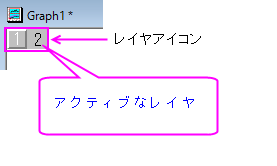
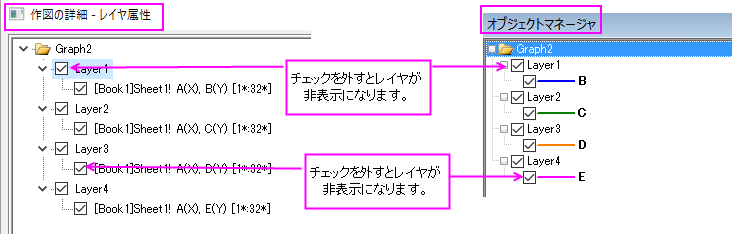

グラフ中のレイヤ、プロットやオブジェクトの非表示と削除
Labels-Data-Layer-Hide
グラフページ中の様々な要素を非表示にしたり、削除したりすることが出来ます。
- 要素の「非表示」は一時的なものなので、簡単に元に戻すことが出来ます。
- 「削除」は恒久的なので、編集：元に戻すで元に戻すことはほぼ出来ません。
グラフ要素が非表示になっているときは、あらゆる出力が出来ないのでご注意ください。 そのため、「非表示」にする理由の1つは、エクスポートする画像ファイルを印刷または作成するときにグラフから要素を一時的に削除することにあります。
グラフレイヤを非表示にする
アクティブなグラフレイヤ以外の全てのレイヤを非表示にするには
- 表示：表示様式：アクティブレイヤのみ表示 を選択、またはグラフレイヤアイコンの上で右クリックし、他のレイヤを隠すを選択します。
- 全てのレイヤを表示するには、 表示： 表示様式： アクティブレイヤのみ表示 または 他のレイヤを隠すを選択します。
- ホットキー Ctrl + Alt + D を押します。

非表示レイヤを再表示するには
- 特定のレイヤを再表示するには、色が薄くなったレイヤアイコンを右クリックし、レイヤーを隠すのチェックを解除します。
- ホットキー Ctrl + Alt + D を押します。
特定のグラフレイヤを非表示にするには
- レイヤアイコンを右クリックし、ショートカットメニューから「レイヤを隠す」を選択します。レイヤ表示するには、色が薄くなったレイヤアイコンで右クリックし、レイヤを隠す を再度選択します。
- 作図の詳細の左側パネルで 、レイヤアイコンの隣にあるチェックマークを外します。再選択して表示します。
- オブジェクトマネージャーのパネルで 、レイヤアイコンの隣にあるチェックマークを外します。再選択して表示します。
-

データプロットを非表示にする
==データプロットの表示/非表示